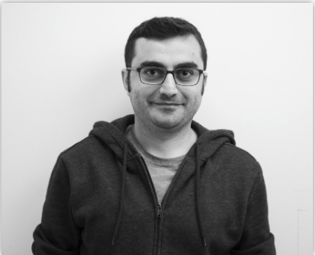
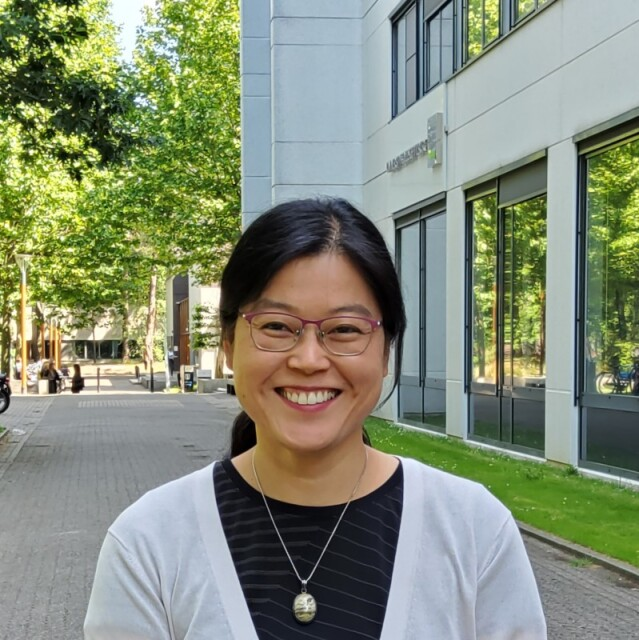
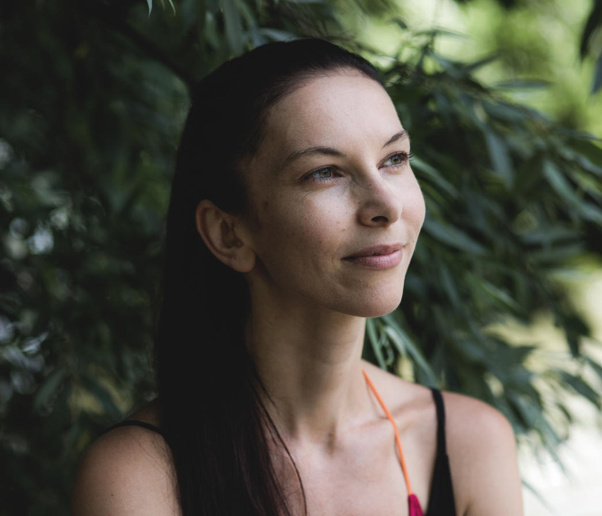

AI for Robotics Lab (AIR-Lab)
The AI for Robotics Lab (AIR-Lab) at Tilburg University focuses on recent advances in AI for robotics to endow robots with advanced cognitive capabilities and state-of-the-art performance. The lab is organized along two main areas:
-
CoDeRs (PI Murat Kirtay)- Cognitive Developmental Robotics (CoDeRs) approach integrates insights from various fields –including machine learning, interaction design, computational neuroscience, cognitive/developmental psychology, etc.– to conduct interdisciplinary research in robotics and artificial intelligence. Our goal is to develop computational models for embodied robots, both physical and virtual, that can interact with humans and other robots. As part of the CoDeRs team, we are also involved in the RoboCup Standard Platform. In this research line, our ultimate aim is to help create human-robot symbiotic societies in an ethically responsible way.
-
DL4Robotics (PI Giacomo Spigler) - The DL4Robotics line focuses on incorporating the latest advances in deep learning into robotics. We are particularly interested in the development of fully end-to-end robot learning methods based on deep reinforcement learning, imitation learning, and self-supervised learning. Our applications span a variety of domains, including human-robot interaction, together with CoDeRs, and dexterous manipulation, for which we use the in-lab developed Tilburg robot hand.
Members
Lab Coordinators | |
|---|---|
|  Dr. Murat Kirtay | Dr. Giacomo Spigler |
Faculty Members | |
|---|---|
|  Dr. Eriko Fukuda | Dr. Merel Jung |
Lab Members | |
|---|---|
| Bosong Ding (PhD) | Kyana van Eijndhoven (Postdoc) |
Past Members | |
|---|---|
|  Nicole van Geel (University of Klagenfurt) | |
News
| May 23, 2024 | We have been invited to give an invited talk titled “Deep Reinforcement Learning in Robotics: Bridging the Gap between Simulation and Real-world Applications” at the “Contributions to Control Systems” seminar series, Institute of Automatic Control, RWTH Aachen University, Aachen, Germany. |
|---|---|
| May 1, 2024 | We have been awarded access to Snellius, the Dutch supercomputer, to work on sim2real transfer for reinforcement learning for robotics. |
| Apr 5, 2024 | AIR-Lab has organized a one day “AI for Robotics” Workshop (link) at MindLabs, with a fantastic lineup of speakers. |
| Mar 7, 2024 | We have given an invited talk titled “Sim2Real : bridging the gap between simulation and real world physics for robot learning” at Pre-PLANCKS Morocco 2024, University of Moulay Ismail, Meknes, Morocco. |
| Dec 21, 2023 | We are organizing a workshop at IEEE ICRA 2024. |
| Oct 16, 2023 | Our paper has been nominated for the best paper award at IEEE ICDL. |
| Mar 29, 2023 | We have been awarded access to Snellius, the Dutch supercomputer, to work on deep reinforcement learning and policy distillation. |
| Mar 27, 2023 | AIR-Lab is set up at the new MindLabs building! |